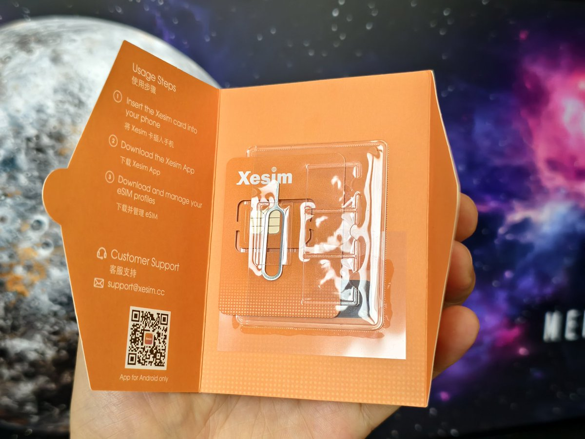
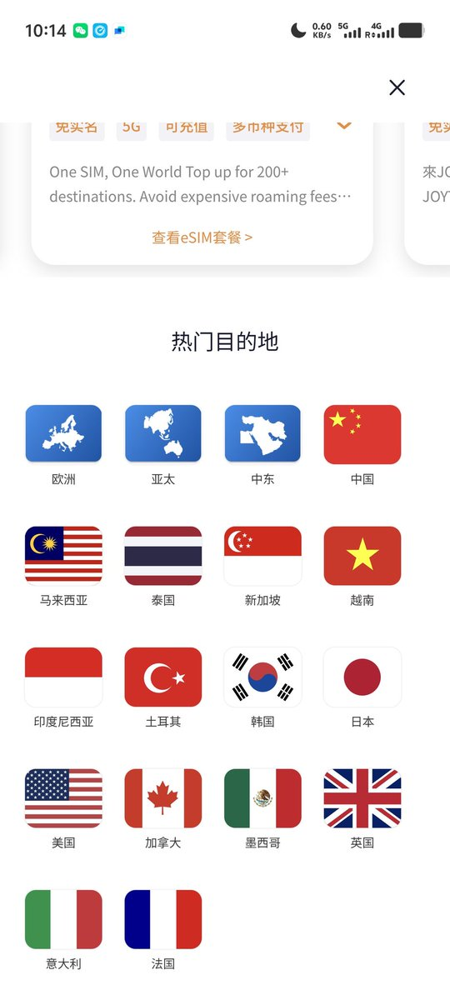

@manateelazycat @xesimcc Ji总也是我的好朋友哈哈，他们家本身就是5ber的技术团队，能力那不用多说。至于eSIM可以试试 @RedteaGO 也会在论坛上做活动~



旅游之前问了推友怎么用纯净IP注册Claude？
我朋友，Xesim的计老板说，他们家的实体eSIM卡是最牛逼的，我前天旅游完，朋友今天就我邮寄到了，感动啊，每天盯着我什么时候旅游完，第一时间就给我寄了卡，哈哈哈哈。
早上用了一下，果然牛逼：
1. 插上实体eSIM卡
2. 买一个香港的eSIM卡，扫码添加激活 https://t.co/9g3NXwx1wz https://t.co/IS4huwBGwu
我朋友，Xesim的计老板说，他们家的实体eSIM卡是最牛逼的，我前天旅游完，朋友今天就我邮寄到了，感动啊，每天盯着我什么时候旅游完，第一时间就给我寄了卡，哈哈哈哈。
早上用了一下，果然牛逼：
1. 插上实体eSIM卡
2. 买一个香港的eSIM卡，扫码添加激活 https://t.co/9g3NXwx1wz https://t.co/IS4huwBGwu